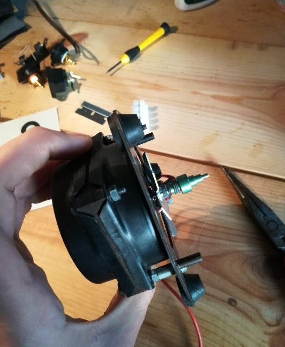
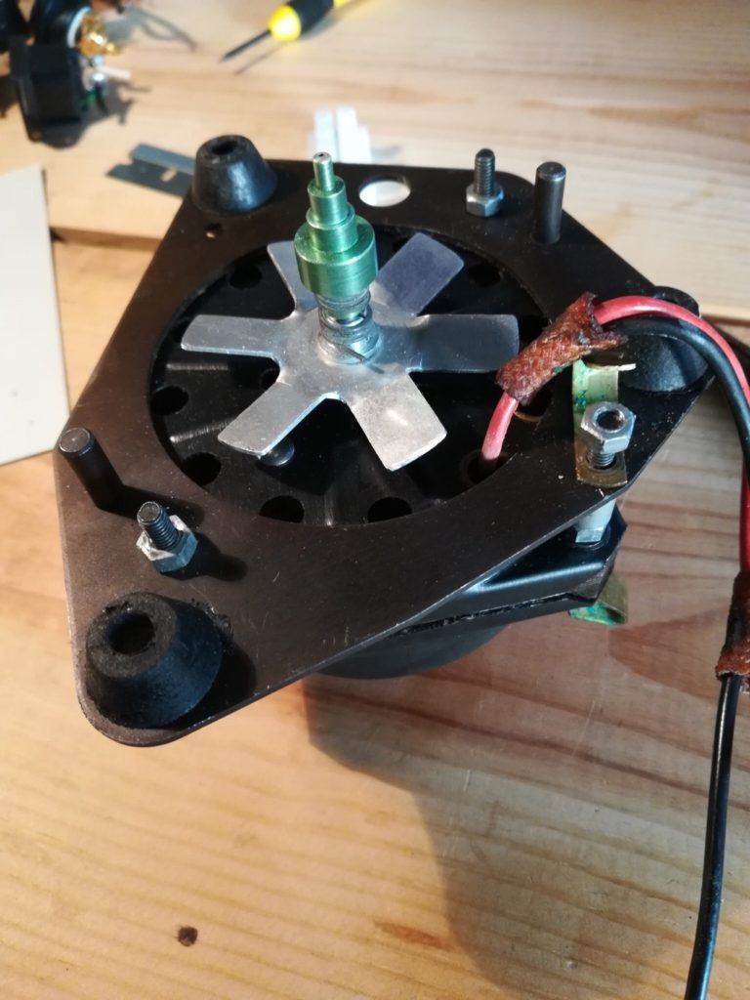

The Magnavox/Collaro changer motors were well built 4-pole motors and seem to produce very little noise, however, after many years they definitely need to be serviced. I recommend full disassembly so that you can degrease and reoil.
The spindle pulls off fairly easily, however, the spring holds it in place, so twisting in the opposite direction of the spring coil at the same time helps. Removing the fan is tricky. It is just a press-fit, so it simply has to be forced off the shaft. I used a flatblade screwdriver, carefully, to pry up. The blades are thin aluminum and bend easily – a sure recipe for vibration and noise. I did bend one of the blades, but used a precision ruler to carefully bend them all back in place before reassembly.

I wonder if the fan is truly necessary. It seems to me like it is the most likely source of vibration/rumble in that motor. Since we have low-noise, cheap, DC case fans now which could provide adequate cooling, I contemplated replacing it with a different source of airflow. Still a possible future improvement.
The upper and lower bearing are riveted to the case. I highly recommend separating the case to soak both bearing and felt wicks in alcohol or mineral spirits: some kind of solvent to dissolve the old oil. Back in the day that these motors were produced, oils were all naturally derived and tended to degrade. We now have more stabile, synthetic oils and greases to replace them with. I used Zoom Spout turbine oil. Zoom spout is a terrific oil for motors and delicate moving parts, and comes with it’s namesake “zoom spout” for easy application everywhere.
The spindle is anodized aluminum and controls the platter speed, depending on which step the idler pulley contacts. The steps measure as follows:
78rpm – 0.427”
45rpm – 0.248”
33-1/3rpm – 0.183”
16rpm – 0.091”
This was the average of a few measurements. When you’re dealing with thousandths of an inch, pressure on the calipers or films of oil or dirt affect the measurement.
The inside diameter of the platter measures 9.375”. A 4-phase motor at 60hz runs at a theoretical 1800rpm. Theoretical because there is always an amount of “slip” to be accounted for, typically around 5% on small motors. That puts the actual speed under load about 1710rpm. 0.183” at 1710rpm translates to 9.375” at 33.38rpm. I suspect the original engineers used a 5% slip value to calculate the proper spindle size.
It is worth noting that the 45rpm step size is just under 1/4”, and the 33rpm step size just under 3/16”. This might make it easy to turn down a new spindle for more significant modification in the future, perhaps a tapered cone spindle for fine speed adjustment.
The motor mounts – the rubber isolators between the motor mounting plate and the steel deck – were in great shape on my Micromatic. They do need to be pliant and soft to do their job of buffering the motor noise. https://www.thevoiceofmusic.com has the correct “M2” motor mounts if yours are missing.
Having taken a couple of these units apart, I’d say the motor is one of the strong points. Even with 60 year-old grease, they work, they’re quiet and they’re fairly powerful for the size. Enough motor to drive a stack of several records.
Tags: electric motor, Magnavox, Turntable